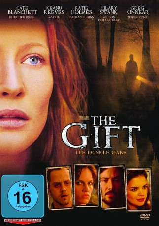
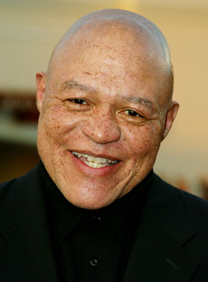
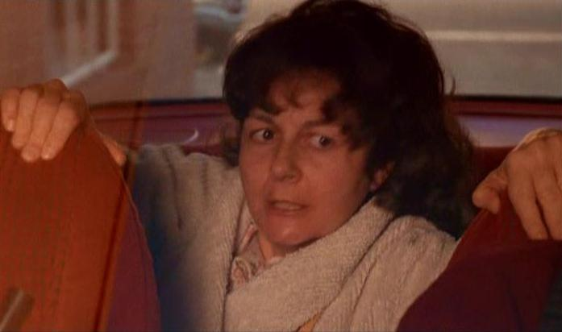

#3188 The Gift - Die dunkle Gabe
Alternativ: The Gift
 
 IMDB-Wertung: 6.7 / 10
IMDB-Wertung: 6.7 / 10  Metascore: 62
Metascore: 62 
In den sumpfigen Bayous bei Savannah verdient sich Annie Wilson ihren Lebensunterhalt und den ihrer drei Kinder mit Kartenlegen. Doch Annie hat eine echte Gabe und kann gewisse Dinge "sehen". Als die Verlobte des hiesigen Schulrektors, Jessica King verschwindet, hat Annie bald darauf eine Vision vom Tode des Mädchens. Sie führt die Polizei tatsächlich zum Fundort, daraufhin wird der überagressive Donnie Barksdale verhaftet, dessen Gewalttätigkeit bekannt ist und auf dessen Land die Leiche gefunden wurde.Doch jetzt schlägt die Stimmung um, und Annie sieht sich zahlreichen Angriffen ausgesetzt, da sie mit Barksdale schon vorher Probleme hatte. Und darüber hinaus ist sie nicht sicher, daß er der Täter ist...
Jahr: 2000
Dauer: 112 Minuten
FSK: 16
Land: USA Studio: Paramount ClassicsTonspuren: DTS - ,
Untertitel:
Auflösung: 1080p (1920x1040) Größe: 8980 MB
Genre: Horror, Drama, Fantasy, Mystery
Regisseur:  Sam Raimi
Sam Raimi
Drehbuch: Billy Bob Thornton, Tom Epperson
Soundtrack: Christopher Young
Darsteller:
 Cate Blanchett als Annabelle 'Annie' Wilson
Cate Blanchett als Annabelle 'Annie' Wilson Giovanni Ribisi als Buddy Cole
Giovanni Ribisi als Buddy Cole Keanu Reeves als Donnie Barksdale
Keanu Reeves als Donnie Barksdale Katie Holmes als Jessica King
Katie Holmes als Jessica King Greg Kinnear als Wayne Collins
Greg Kinnear als Wayne Collins Hilary Swank als Valerie Barksdale
Hilary Swank als Valerie Barksdale Michael Jeter als Gerald Weems
Michael Jeter als Gerald Weems- Kim Dickens als Linda
 Gary Cole als David Duncan
Gary Cole als David Duncan Rosemary Harris als Annie's Granny
Rosemary Harris als Annie's Granny J.K. Simmons als Sheriff Pearl Johnson
J.K. Simmons als Sheriff Pearl Johnson Chelcie Ross als Kenneth King
Chelcie Ross als Kenneth King-  John Beasley als Albert Hawkins
- Nathan Lee Lewis als Cornelius
- Russell Durham Comegys als Ben Sr.
- Kipp Chambers als Boy at Dance
- Dallas Johnson als Dallas
- Stuart Greer als Officer Huggins
- Jeff Bragg als Jed Barksdale
- Danny Elfman als Tommy Lee Ballard
- Erik Cord als Buddy's Father
- Shawn McBride als Courtroom gallery , uncredited
- Ray Wineteer als Juror , uncredited
- Yvetta Young als Family Friend , uncredited
- Lynnsee Provence als Mike Wilson
- Hunter McGilvray als Miller Wilson
- Benjamin Peacock als Tommy
- Clay James als Stanley
- David Brannen als Ben Wilson
- Janell McLeod als Mrs. Francis
- Robby Preddy als Lady #2
- Lucky Lawrence als Member of The Souvenirs Band / Handsome Man at Bar
- Mo als Member of The Souvenirs Band
- Boots Kutz als Member of The Souvenirs Band
- Buck Edwards als Member of The Souvenirs Band
- D.J. Pawlak als Member of The Souvenirs Band
- S.D. Stephens als Deputy on Shore
- Samuel E. Parlin Jr. als Deputy in Boat
- Ed Reddick als Judge
-  Rebecca Koon als Buddy's Mother
- Sam Edens als Member of Barksdale Clan , uncredited
- Earl Maddox als Barksdale , uncredited
Datei: X:\2000\Gift - Die dunkle Gabe, The (2000, FSK16, 1920x1040).mkv seit 11.02.2016
Festplatte: HD 1996-2002
 Es gibt insgesamt 82 Filme in der Gruppe '2000'
Es gibt insgesamt 82 Filme in der Gruppe '2000'